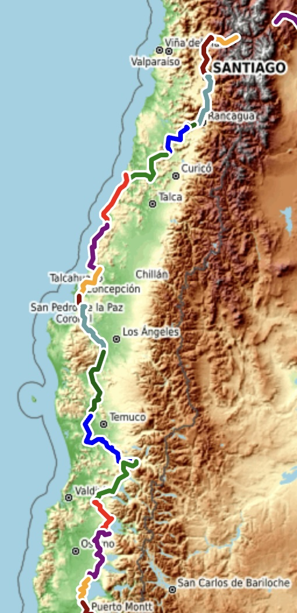

Chile#
Cycling Through Coastal Ranges and Volcanic Lakes#
Chile’s segment of the South American Epic is a journey through diverse landscapes, from Santiago’s central valley to the lush lake district of the south. Riders follow rolling coastal ranges, volcanic foothills, and scenic lake routes, eventually entering Patagonia’s rugged wilderness.

Each block below highlights key geographic features, along with an interactive map of the actual routes ridden.
Block 21: Santiago to Concepción#
Leaving the bustling capital, the route moves through vineyards, rolling hills, and forested coastal mountains. The ride features mild terrain with a mix of farmland and small towns, gradually approaching the coast.
Block 22: Concepción to Pucón#
This block marks the transition into Chile’s Lake District, where volcanoes, alpine lakes, and dense forests dominate the scenery. The terrain becomes more undulating, with some steep climbs leading to breathtaking views.
9️⃣ A Chilean Sea Feast by Our Cycle Tour Chef Mark#

Block 23: Pucón to Puerto Varas#
Riding deeper into southern Chile, the expedition follows a spectacular route through the Andes foothills, passing snow-capped volcanoes, crystal-clear rivers, and vibrant green forests. The cycling here is demanding but visually rewarding.
Closing Thoughts#
Chile’s landscapes transition from agricultural valleys to the awe-inspiring beauty of the Lake District. The journey through Chile’s southern regions is both scenic and challenging, setting the stage for the final, breathtaking miles into Patagonia.
With Chile behind, the expedition moves into Patagonia, where the landscapes become wilder and more remote, leading to the ultimate southernmost cycling adventure. 🚴♂️